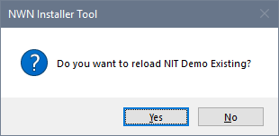
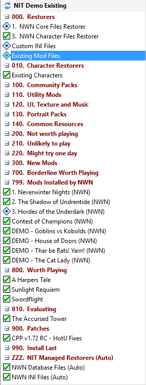

The Installer Tool works best when all the Mods you use are installed by the Tool so it can track the files copied to your Neverwinter Nights installation folders. However, you may already have copied a lot of Mod files before you started using the Installer Tool.
If you have retained copies of all the Mods you downloaded, the best approach is to create a fresh Neverwinter Nights installation and move your library of downloaded Mod files to the Installer Tool. Once you have done this, you can Create Original Restorers and then install the Mods you want to keep.
A. Ensure you can restore all your existing files
These steps are recommended so you can restore your files after performing a fresh install of Neverwinter Nights as well as restore individual files that may be overwritten by new Mods you install.
- Save your customised INI files.
- Move your library of downloaded Mod files to the Installer Tool and install the Mods. You can skip this step if you just want to leave what you have and use the Installer Tool for new Mods.
- Create Restorers to backup installed Files.
If you skip steps B and C to avoid the hassle of reinstalling Neverwinter Nights, you can Create NIT Mods from Restorers.
B. Reinstall Neverwinter Nights
- Close the Installer Tool.
- Use Programs and Features to uninstall Neverwinter Nights.
- Reinstall Neverwinter Nights.
- Start the Installer Tool.
C. Restore your Mod Files
- Click Create Original Restorers from the Manage menu.
- Install your customised INI files and Uninstall NWN INI Files (Auto) to ensure your INI file customisations are applied.
- Install the Mods you created from your library of downloaded Mod files in step A.2.
- Install the Character and existing Mod file Restores that you created in step A.3.
- If you had modified any campaign files, you need to create a Mod containing the changed files so it loads after the "799. Mods Installed by NWN" Group. You can copy the campaign files from your existing Mod Restorer (Campaign Patches provides information that may help you to do this).
- Install NWN Database Files (Auto) to restore your Neverwinter Nights database files.
- Install any Mods that are showing as uninstalled to deal with missing Installer Tool configuration files that are not present in your fresh Neverwinter Nights installation.
- Click Load from the File menu and select the Profile you have been working on. Answer Yes to allow the Profile reload and finalise your Profile information.

- Your original files are restored and you are now ready to use the Installer Tool to manage your Neverwinter Nights installation.

Related Topics
Key concepts and terminology
User Interface
Run the Installer Tool for the first time
Review Settings you may want to change
Deal with existing installed Mods